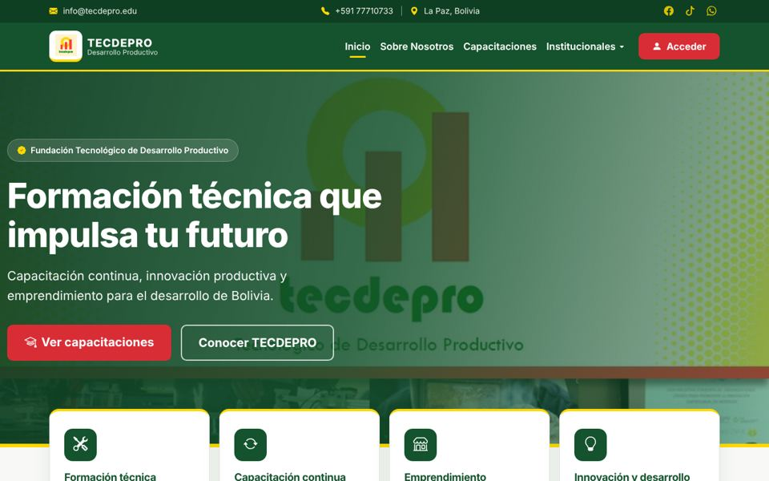

Portal web y sistema
TECDEPRO Cliente En línea
Portal y sistema de la Fundación Tecnológico de Desarrollo Productivo, en La Paz. Las personas encuentran cursos de capacitación técnica y piden información, y el personal publica los cursos desde el sistema.
- Catálogo de cursos con buscador y filtros por área y modalidad
- Ficha de cada curso con duración, modalidad y cupos disponibles
- Sistema interno con acceso por usuario y contraseña
- Se instala en el celular como una app y está preparado para Google
Hecho con PHP y MySQL con arquitectura MVC, Bootstrap 5 y JavaScript